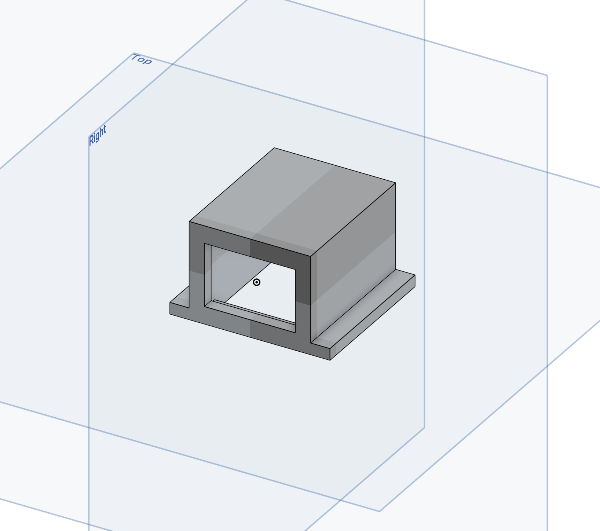
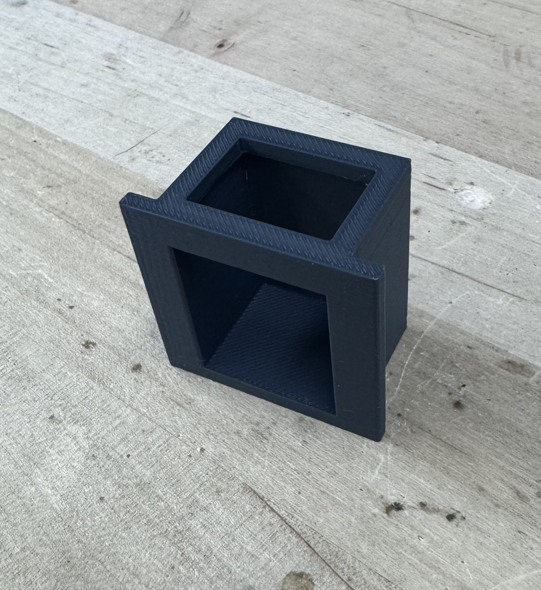
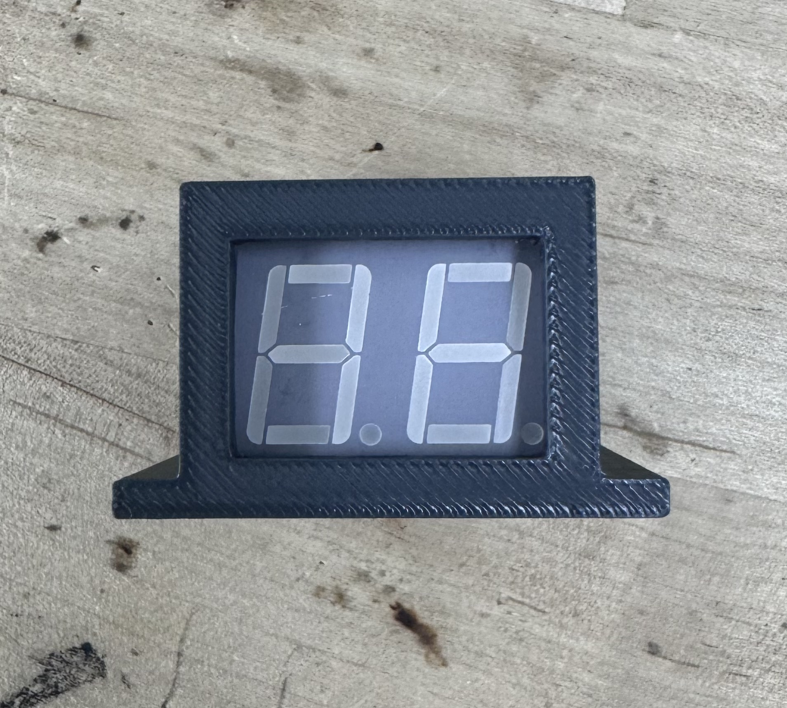
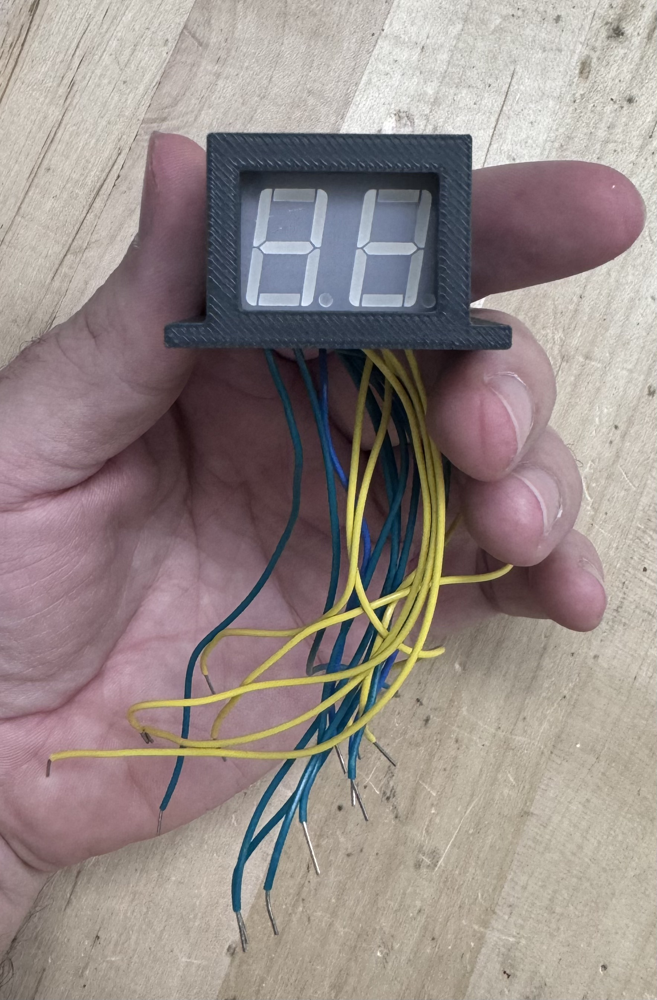
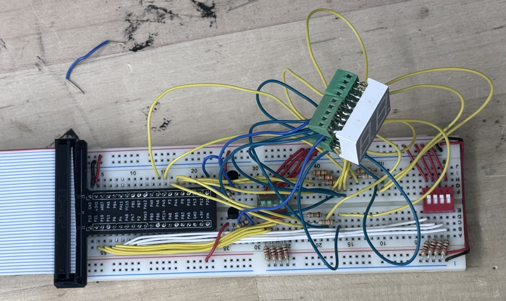
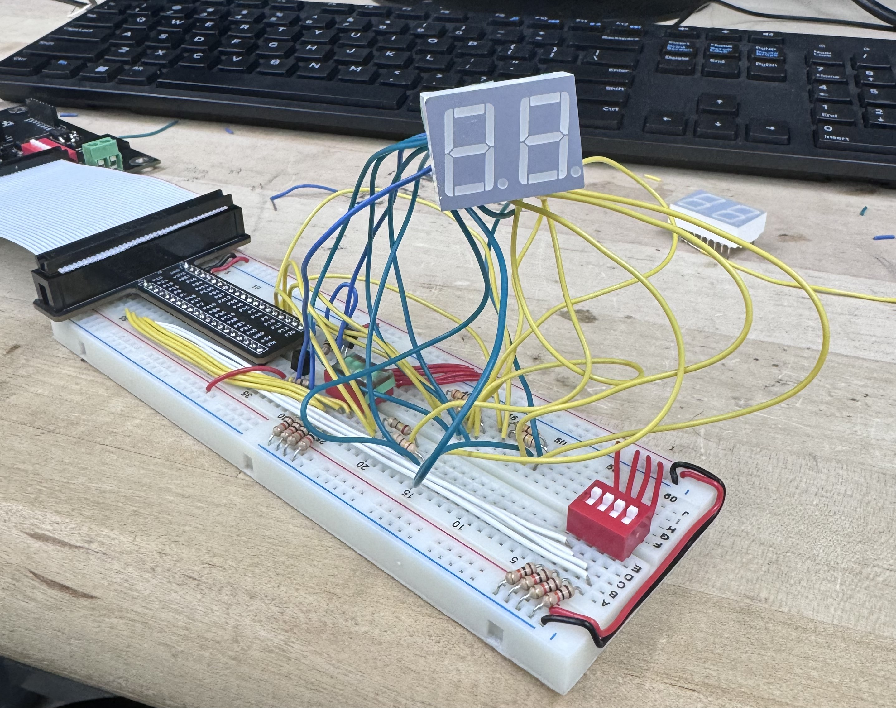

Lab 2 Reflection
Intro
If I recall my reflection from Lab 1 correctly, its main refrain was: “This week was nice, and I learned a lot, but I’m scared for when things get not-so-nice”. Well, this week certainly toed that line, introducing some highs and lows that tested my resolve just a bit.
And to think… the week started so well…
When I first began Lab 2, I was (and this is the best word here) stoked. I was excited for a relatively easy lab that reused a lot of code from last week, taught me a new concept (time multiplexing), and had something cool to show for it. Thats why I got so excited when I saw the specification for Excellence, reading: “Digits on the seven-segment display are upright to the viewer.” At first, I wasn’t sure what to make of this specification. Prof Brake didn’t mean that the digits had to be literally upright – did he? If that was the case, I wondered… well, couldn’t you just tilt the breadboard up to face out towards a room? Surely that can’t be what he means.
Then I asked a class TA and sure enough, he meant just that. I had to get my digits to stand physically upright.
Creating a Housing for “Uprightness”
The more I thought about it, the more it represented an interesting challenge. Say you wanted to leave your breadboard flat on the table and read out the digits “upright to the viewer”. One would have to create some sort of contraption to hold the display in place in this upright position. Then, how would one get the electrical contacts to the LED display? A custom wiring harness would do it. As I peeked ahead at Lab 3, I saw that we will use the same hardware again… Wouldn’t that be something cool to bring forward? A standalone LED display with a custom wiring harness that connected up to my development board?
With this idea in mind, and the hope that I had time to spare this week, I got straight to work on my hardware schematic and standalone display setup. I figured that I would need to design the hardware from the ground up in order to accommodate this detachable display. I cracked open my favorite CAD software (Onshape), grabbed a pair of calipers, and modelled up this little guy below.

After brushing up on my college’s 3D printing quizzes to gain access, I discovered that their suite of brand new machines would serve me incredibly well. Using an extra fine layer height (this is for presentation after all) I printed this result below. 
After checking the fit, I found it was perfect!

I planned to loop back around later to make a stand for the housed display. That’s why the display housing has tabs to the right and left – a sturdier display with a hollow core could have rested flat on the desk and routed the wiring down through the display housing and out the back of the stand. I figured that I had a couple more steps to go before I got there though! While I was developing my code and block diagram in parallel, I started work on a wiring harness.
Wiring Harness #1
It saddens me so greatly that I don’t have an image of this first harness. Sneak Peak: It didn’t work, and it failed epicly. Think, like, slow motion montage of everything falling apart. This was that.
First, I reasoned through some design decisions. I figured that I would want to solder the wires to the display, so that they didn’t easily come off. However, I didn’t want to solder directly to the display pins. That would have left me in an odd spot if I wanted to change anything, or even if I just needed to adjust how the display sat in the housing. So, I snapped off two pieces of 1x9 female PCB headers. I figured that I could plug my display into these two rows, then solder my wires to the through hole pins. Next, I figured I would want to use stranded wire, to avoid fatigue breaks along the wire/solder. After all, I planned to use this guy for the next couple labs – that’s a lot of movement. But, I worried that the stranded wire could easily cause accidental connects once it was shoved up inside the display housing. The through hole pins on the header aren’t that strong either, and could bend together to touch. So, I figured that I would need to add some heat shrink tubing around each connect to make sure it wouldn’t need to be debugged in the future.
It is worth noting at this point – I worked for a whole summer where half my job was wire harnesses. I won’t say I love them, because that sounds stupid. But I certainly like them. There is an elegance to an effective harness, and I rarely got to manufacture them myself. So if it sounds like I was going in too deep… I was.
I wonder if anyone reading this will be able to predict my problem… I certainly wasn’t. First off, the stockroom was out of standard heat shrink tubing in small AWG sizes. They only had these wire-to-wire soldering tubes which fused and protected two separate wires. By cutting these in half and removing the solder in the middle, I was able to get a relatively standard piece of heat shrink tubing. I then got to soldering. I forgot how tricky this could be with stranded wire and only two hands! After an hour or so of soldering a whole PCB header’s worth, I slid my heat shrink down each wire and nestled it in at the base. I headed over to the heat gun that I had found in the analog lab, and turned on low heat.
Instant problems. The heat shrink tubing I had rigged up apparently had the world’s highest shrinking point. I had to turn the gun up to high and hold it for several seconds to see any change. Do you know what, as it turns out, has a lower melting point? Solder. My solder. The solder I had spend an hour doing. So the whole thing fell apart in front of me.
The plastic header was melting. The solder ran in rivers down each pin and pooling in the header. All pins were now one solid contact. The wires fell away as their solder melted. Their jackets dripped down around their frayed and solder-blackened edges. My heat shrink tubes were finally beginning to seal down – around nothing. With the wires gone, they instead sealed off the PCB pins from ever being used again.
I basically made a really hot, very melted piece of multimedia art that was no longer capable of any useful function. And I am so sad that I did not get a picture of it.
Wiring Harness #2
My next idea was to use screw terminals as the “header”, or as the connection between display and wire. I figured that I could solder pins to pins and feel relatively confident that they would not make accidental electrical contacts. I could avoid soldering stranded wire entirely, expect maybe to make a solid end to plug into my breadboard.
This idea was brilliant. It worked flawlessly. After tragedy, I cannot express how welcome success was. Check out the octopus of wires that now stuck out from my display housing – all perfectly secure and yet removable!

However, check out what happened when I tried to plug it in.

I named that image “Rats Nest”. Can you see why?
Migration to a Bigger Board
As soon as I went to actually interface this display with my breadboard, I realized that I was going to have a debugging problem. At this point, I had developed my code enough that I was ready to try running it on an actual display for the first time. I knew that I had thrown my hardware together hastily, anxious to try it out. I had used the only breadboard I had, which was now flying near max capacity. I was confident that if my solution didn’t work the first time, I would have to strip everything down and rewire it on a bigger breadboard. With this scary thought in mind, I plugged it in… and got nothing. Expletive. Pick your favorite.
Just to drive the point home, this is what I was looking at as I tried to debug my completely non-functional system. I couldn’t get any oscilloscope or multimeter probes anywhere near where I needed them, and following individual wires was like trying to follow an individual spaghetti noodle as you held a wet clump in your hand. But, I have to say, nobody else had a display that floated (as far as I know).

After a tedious rewiring, I came to the final hardware solution presented in my Lab 2 report.
What did I learn from this? Ironically, it wasn’t really a lesson learned as much as it was a lesson reminded. I traditionally make overly-neat, meticulously crafted breadboards. I cut each wire to perfect lie-flat length, bend each to fit around and over components, and use my favorite pair of needlenose pliers. What happened this time? Well, partly, I had components which literally floated. I also, however, missed the crucial step of laying out my components beforehand. I didn’t have a good understanding of how many rows I needed, to wire up components like my switches and display resistors. I put myself in a bad situation which I can avoid in the future by completing my design schematic before trying to build out half of it. Additionally, this was a reminder to leave a little wiggle room. My permanent move to a larger board should serve me well in this aspect, but it is worth repeating. I often treat my hardware like I plan to set-it and forget-it. As labs get more complex, this is less realistic.
Tragedy – ’Twas all for naught
At this point, I had resigned to prototyping on a flat display before trying out my new harness and standalone unit on a working final prototype. Working in lab one day, I heard my friend Alisha laughing at my octopus display. Alisha is one who is likely to strive for excellence marks, so I challenged her: “How did you meet that spec then?”
She looked at me with blank eyes and said: “Jackson, what spec? It does not need to be upright.”
After I confirmed with the professor that I had misread the spec, an incredulous me turned into an incredibly disappointed me. At this point, I had invested far more time into the lab than planned, and was no longer on track to finish it by my hopeful Thursday afternoon checkoff. I was willing to pursue the idea when it was an excellence spec, or when it wouldn’t cost me work on next week’s lab – neither condition was true any longer. So, I sadly paused work on my floating octopus and resigned to have my display lie flat like all the others. I resigned to just making sure that the display was “oriented upright to the viewer,” so that digits present themselves in a normal reading manner. Finishing the lab after that was short work – the trickiest part was writing the testbenches. But I lost a lot of flare for it after that. It just wasn’t as exciting any more.
Conclusion and Reflection
I think the moral of the story here is that I got overexcited then burnt out too quickly. I still completed a successful lab, albeit way out of the time I had allotted. I still have a great write-up to show for it, and some cool parts that could one day stand alone. I learned a valuable lesson about clarifying specifications at the source, and paying closer attention to when I’m doing something that I don’t see anyone else doing. While that can sometimes be good, it is likely more often a sign that I had missed or misunderstood something. I am, after all, surrounded by some of the best and brightest at Mudd – I am far from the only overzealous one, and certainly not the only one striving to meet all excellence specs.
In a more technical sense, I want to get better at writing my testbenches. I did alright this time around, but my display Multiplexer test bench only hit my personal bare minimum. The key thing holding me back here is understanding how to replace the HSOSC module with a testbench generated signal, and understanding how this plays into my test vector readout. I hesitated this time around because I didn’t want to spend forever debugging the testbench alone, rather than the real system. Increasing my proficiency on this front would be a great boon to my EE skills going forward, both in this course and as a practicing professional.